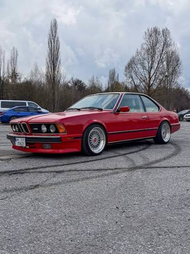
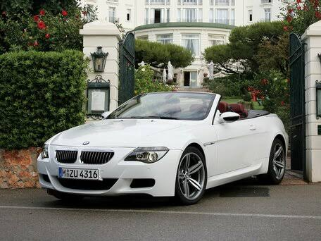
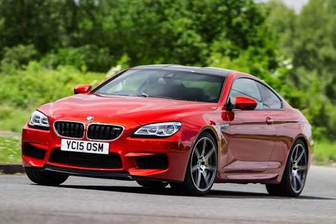

🔗 Читати детальніше на ВікіпедіїОпис та історія: Перше розкішне спорт-купе, яке поклало початок лінійці M6.

🔗 Читати детальніше на ВікіпедіїОпис та історія: Потужне купе та кабріолет із моторним V10 від Формули-1.

🔗 Читати детальніше на ВікіпедіїОпис та історія: Преміальне купе та гран-купе з потужним V10/V8 турбованим двигуном.